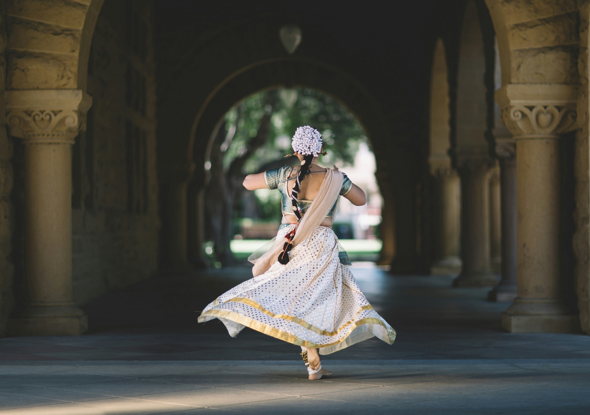

The Etymology and Definition of Dance
Dancing involves moving the body rhythmically, often in a choreographed way and usually to music. Dance can express
aesthetic ideas and emotions as a form of performance art presented to an audience. People also dance in
nonperformance situations to release energy, express emotion, connect with other people, or just enjoy the feeling
of movement.
The word "dance" originates from Old French "dancer" (verb) and "dance" (noun).
„Dance is the hidden language of the soul.” – Martha Graham
The Origins of Dance
Dance has a long history, with origins dating back to prehistory. The earliest evidence comes from cave
paintings discovered in caves in India, dating to around 8000 BCE, and from Egyptian tombs from 3300 BCE, where
dance was often associated with religious rituals. In Ancient Greece, dance was part of ceremonies dedicated to
the god Dionysus and the ancient Olympic Games.
In Asia, dance has held deep cultural significance. Classical Indian dances like Bharatanatyam have a history of
thousands of years, and in China, ceremonial and folk dances, such as the dragon dance and lion dance, date back
over 3,000 years.

In Europe, folk dances from the Middle Ages evolved into ballroom dances during the Renaissance, becoming an
important part of social life in royal courts. In the 19th century, dances like the waltz became globally
popular, and in the 20th century, social dances focused on couples.
The origins of dance are closely tied to ancient rituals, stories, and ceremonies of human communities. Dance
was used to invoke deities, celebrate the seasons, tell stories, or accompany important moments.